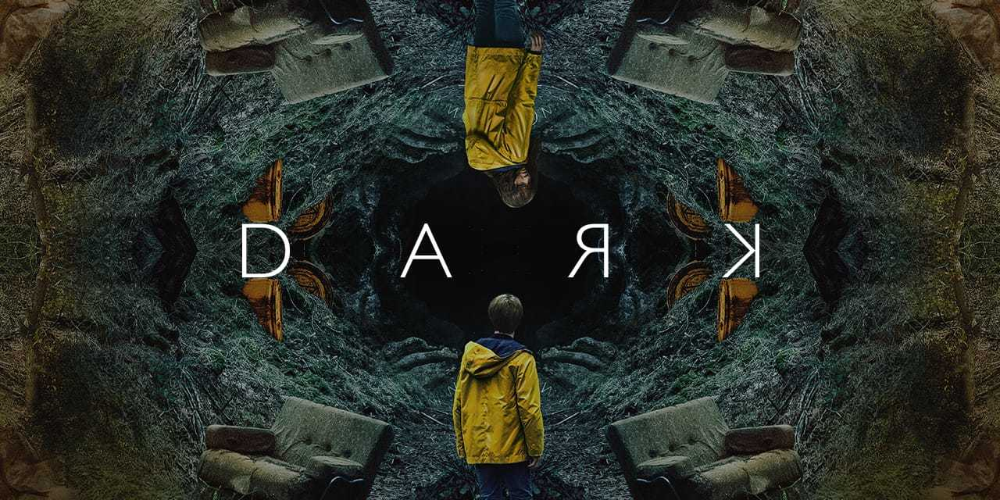
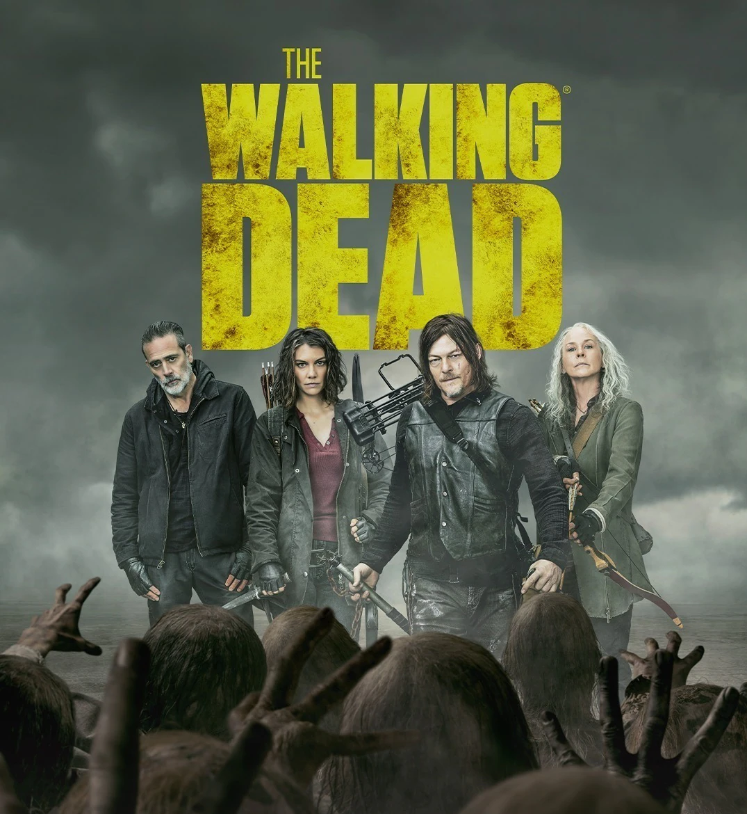
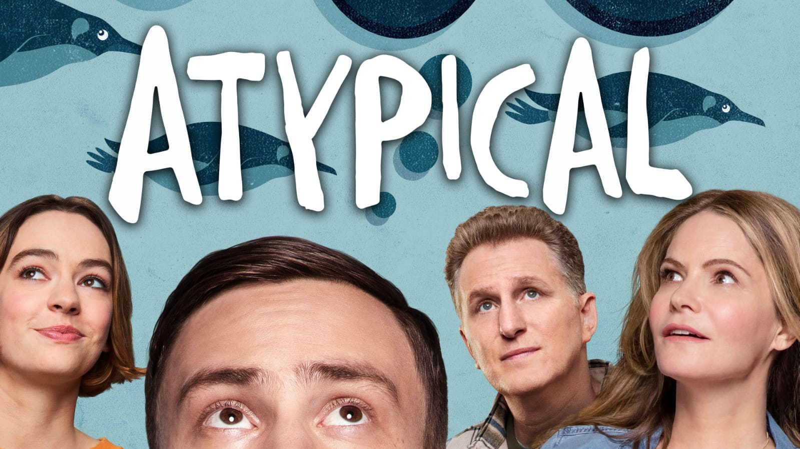
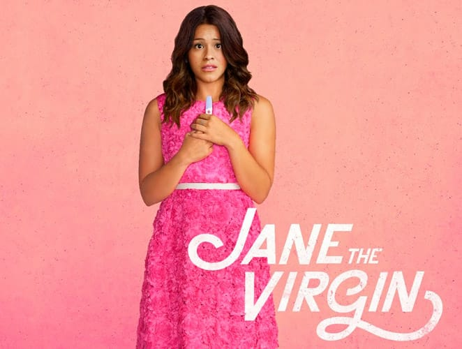
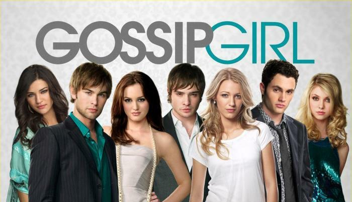
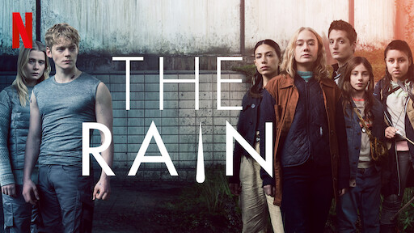
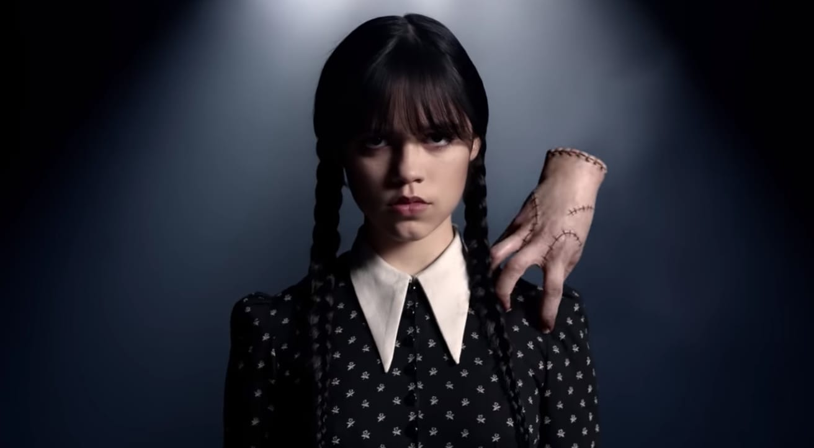
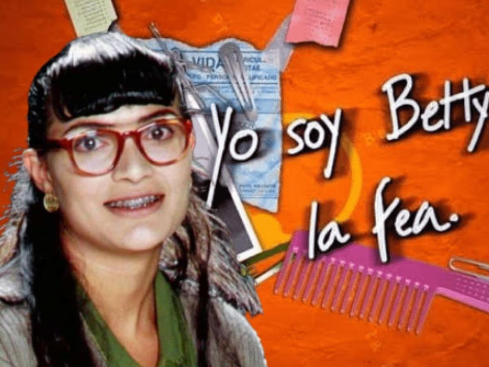

SERIES MAS POPULARES DEL 2022

DARK
Dark fue una serie de televisión web alemana de suspenso y ciencia ficción creada por
Baran bo Odar y Jantje Friese. Situada en la ficticia ciudad de Winden (Alemania),
Dark sigue las secuelas de la desaparición de un niño que expone los secretos y las
conexiones ocultas entre cuatro familias mientras desentrañan lentamente una siniestra
conspiración de viaje en el tiempo que abarca tres generaciones.
A lo largo de la serie, Dark explora las implicaciones existenciales del tiempo y sus
efectos sobre la naturaleza humana.

THE WALKING DEAD
Es una serie de televisión estadounidense de horror postapocalíptico de AMC basada en
la serie de cómics homónima de Robert Kirkman, Tony Moore y Charlie Adlard. La serie
presenta un gran elenco como sobrevivientes de un apocalipsis zombi, tratando de mantenerse
con vida bajo la amenaza casi constante de ataques de los zombis sin conciencia,
coloquialmente conocidos como caminante. Sin embargo, con la caída de la humanidad, estos
sobrevivientes también enfrentan conflictos con otros sobrevivientes que han formado grupos
y comunidades con sus propios conjuntos de leyes y morales, lo que a menudo conduce a
conflictos hostiles entre las comunidades humanas.
The Walking Dead se estrenó el 31 de octubre de 2010. Se emitía exclusivamente en AMC en
los Estados Unidos e internacionalmente a través de Fox Networks Group y Disney+. La
décima temporada se estrenó el 6 de octubre de 2020 y se ha renovado hasta la undécima
temporada. A partir de su tercera temporada, The Walking Dead ha atraído a más espectadores
de 18 a 49 años que cualquier otra serie de televisión por cable o red abierta, aunque
la audiencia ha disminuido en las últimas temporadas. En general, la serie ha sido bien
recibida por los críticos.
RICK AND MORTY
Es una serie de televisión americana de animación para adultos creada por Justin Roiland y
Dan Harmon en 2013 para Adult Swim, también se emitió en Cartoon Network. La serie sigue
las desventuras de un científico, Rick Sanchez, y su fácilmente influenciable nieto, Morty,
quienes pasan el tiempo entre la vida doméstica y los viajes espaciales, temporales e
intergalácticos. Dan Harmon, el co-creador de la serie y Justin Roiland son los encargados
de las voces principales de Morty y Rick, la serie también incluye las voces de Chris
Parnell, Spencer Grammer y Sarah Chalke.
La serie se originó por un cortometraje rudimentario animado por Roiland para el festival
de cine Channel 101 llamado Doc and Mharti, una parodia de los principales protagonistas de
Back to the Future.

ATYPICAL
Es una serie televisiva del género novela de aprendizaje, creada y escrita por Robia Rashid
para Netflix. Se centra en la vida del chico de 18 años Sam Gardner (Keir Gilchrist), quien
tiene un trastorno del espectro autista. La primera temporada fue lanzada el 11 de agosto
de 2017, constando de ocho episodios. La serie fue en su mayoría bien recibida por la
crítica. El 13 de septiembre de 2017 fue renovada para una segunda temporada que consta de
diez episodios y se estrenó el 7 de septiembre de 2018. Una tercera temporada fue confirmada
el 24 de octubre de 2018 y lanzada el 1 de noviembre de 2019, la cual consta de diez episodios.
En febrero de 2020 se anunció la 4.ª y última temporada de 10 episodios, que se estrenó el 9
de julio de 2021.
La serie, originalmente conocida como Antarctica (por su nombre en inglés), fue creada y
escrita por Robia Rashid, quien anteriormente trabajó en Cómo conocí a vuestra madre y The
Goldbergs como productora.

JANE THE VIRGIN
La serie es una adaptación de la telenovela venezolana Juana, la virgen creada por Perla
Farías. La serie es protagonizada por Gina Rodriguez como Jane Villanueva, una joven latina,
trabajadora y religiosa, que queda embarazada después de ser artificialmente inseminada
por error.
Jane the Virgin ha recibido aclamación de los críticos desde su estreno. En los Premios
Globo de Oro de 2014, Gina Rodriguez ganó el premio a la mejor actriz de serie de
televisión - Comedia o musical, mientras que la serie fue nominada a la mejor serie-comedia
o musical. La serie también recibió el Premio Peabody y fue nombrada programa de TV
del año por el American Film Institute.
El 11 de enero de 2015, la serie fue renovada para una segunda temporada. El 11 de
marzo de 2016, se anunció que fue renovada para una tercera temporada. El 8 de enero
de 2017, The CW renovó la serie para una cuarta temporada programada para estrenarse
el 13 de octubre de 2017
LOVE ALARM
Es una serie de televisión surcoreana transmitida del 22 de agosto de 2019 al 12 de
marzo de 2021 a través de Netflix y tvN. La serie fue protagonizada por Kim So-hyun,
Song Kang y Jung Ga-ram.
La serie gira en torno a una aplicación llamada «Love Alarm», que le dice al usuario/a
si alguien dentro de los 10 metros en donde se encuentra tiene sentimientos románticos
hacia él/ella. Pronto la nueva tecnología interrumpe enormemente en la sociedad y
afecta la vida de las personas que comienzan a usarlo.
Aunque la aplicación inicialmente atrae la atención y obtiene un gran número de
seguidores, pronto los participantes comienzan a esforzarse por comprender los verdaderos
sentimientos de los demás y anhelan un romance natural, que comienza desde el momento en
donde sienten que su corazón comienza a palpitar por alguien más.

GOSSIP GIRL
Fue una serie de televisión estadounidense de drama adolescente, basada en las novelas
homónimas de Cecily von Ziegesar. La serie fue creada por Josh Schwartz y Stephanie Savage,
se estrenó en The CW el 19 de septiembre de 2007 y finalizó el 17 de diciembre de 2012.
El éxito de Gossip Girl llevó a adaptaciones internacionales fuera de los Estados Unidos.
La serie ha recibido numerosas nominaciones a distintos premios, entre ellos, 18 Teen Choice
Awards.
La trama principal de la serie, se basa en Gossip Girl, el cual es un blog en internet muy
conocido, que narra día a día chismes, conflictos amorosos, familiares y económicos de un
grupo de jóvenes multimillonarios de la elite de Manhattan.

THE RAIN
Es una serie de televisión web danesa creada por Jannik Tai Mosholt, Esben Toft Jacobsen
y Christian Potalivo. Se estrenó en Netflix el 4 de mayo de 2018. La segunda temporada
se estrenó el 17 de mayo de 2019 y la tercera y última temporada se estrenó el 6 de agosto
de 2020.
Seis años después de que un virus terrible arrastrado por la lluvia aniquilase casi a
todos los humanos en Escandinavia, dos hermanos daneses, Simone y Rasmus, emergen de la
seguridad de su búnker para encontrar los restos de la civilización caída. Pronto se unen
a un grupo de supervivientes jóvenes y juntos se embarcan en una aventura llena de peligros
a través de la Escandinavia abandonada, en busca de cualquier señal de vida. Liberados
de su pasado colectivo y de las reglas sociales, el grupo tiene la libertad de ser quien
quiere ser.
En su lucha por la supervivencia, descubren que incluso en un mundo post-apocalíptico
todavía hay amor, celos, madurez y muchos de los problemas que creían haber dejado atrás
con la desaparición del mundo que conocieron.

MERLINA
es una serie de televisión estadounidense de misterio y comedia oscura, basada en el personaje
Wednesday Addams de The Addams Family. Creada por Alfred Gough y Miles Millar, la serie está
producida por MGM Television y distribuida por Netflix. Protagonizada por Jenna Ortega en el
papel principal, con Catherine Zeta-Jones, Luis Guzmán, Isaac Ordonez, Emma Myers y Gwendoline
Christie en papeles secundarios. Wednesday se estrenó el 16 de noviembre de 2022 y en Netflix
el 23 de noviembre con críticas predominantemente positivas de los críticos, quienes elogiaron
la actuación de Ortega. El 6 de enero de 2023, la serie fue renovada para una segunda temporada.
La serie es una comedia de misterio sobrenatural juvenil que se centra en Wednesday Addams y
sus años como estudiante de secundaria en la Academia Nevermore, donde intenta dominar sus
poderes psíquicos, detener una monstruosa ola de asesinatos de los ciudadanos del pueblo
y resolver el misterio sobrenatural que afectó a su familia, todo mientras navega por sus
nuevas relaciones.

BETTY LA FEA
Concluimos con esta lista de las 10 series mas populares y conocidas con una telenovela
amada por muchos la cual se llevo el lugar numero 1 en las mas vistas por mucho tiempo.
Yo soy Betty, la fea, o simplemente Betty, la fea, es una telenovela colombiana, creada
por RCN Televisión y escrita por Fernando Gaitán. En 2010, fue incluida en el Guinness
Records como la telenovela más exitosa de la historia de la televisión. Se estrenó el
25 de octubre de 1999 y finalizó el 8 de mayo de 2001
Su versión original fue emitida en muchos países con gran éxito, incluyendo a toda
Iberoamérica, con elevados niveles de audiencia. Gozó de un gran éxito internacional al
ser emitida en más de 180 países, ser doblada a 25 idiomas y al contar con al menos unas
28 adaptaciones alrededor del mundo, siendo la telenovela que más adaptaciones ha tenido.
El personaje principal es Beatriz Aurora Pinzón Solano, que es una mujer poco atractiva
pero inteligente que trabaja para una compañía de modas llamada Ecomoda. Betty, como
cariñosamente le dicen, tiene que soportar constantemente los insultos y desprecios de
sus compañeros de trabajo, especialmente de la secretaria Patricia Fernández, el diseñador
Hugo Lombardi y la accionista de la empresa, Marcela Valencia.